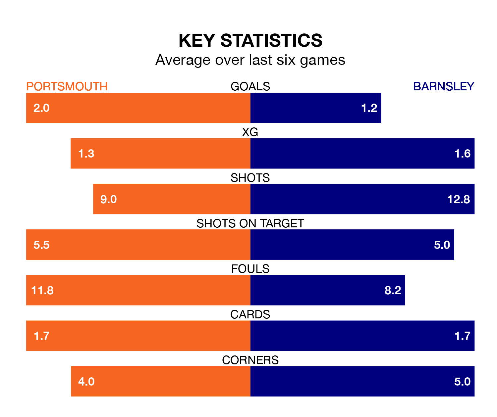

Barnsley face a challenge to maintain their high-scoring form away against a tight Portsmouth defence on Tuesday.
With 77 goals in 43 games, Barnsley are the third-highest scorers in EFL League One ahead of the 7.45pm kick-off at Fratton Park.
They face a Pompey side who have scored 72 in 43 matches, but conceded only 37 goals, putting them joint-top of the league's tightest defences.
Portsmouth are top of the table after 43 games, of which they have won 26 and drawn 13, earning 91 points.
Barnsley are four places behind Pompey in fifth, with 21 wins and 12 draws putting them on 75 points.
With Will Norris between the sticks, the home team can rely on one of the league's safest pair of hands. He has kept 18 clean sheets in his 43 appearances this season, and no 'keeper has prevented the opposition scoring more often in EFL League One.
In the Tykes's net, Liam Roberts has eight clean sheets in 35 games. He has conceded a goal every 73 minutes, 60% more often than the 114 minutes between goals for Norris.
In the last 10 years, Portsmouth and Barnsley have played each other on six occasions. Portsmouth won two of them, Barnsley one, and they drew three times.
On average, Pompey scored 1.7 goals and the Tykes 1.5 in those matches.
Their last meeting was on September 19, when Portsmouth won 3-2 away.
Portsmouth are in good form in EFL League One, with four wins and two draws from their last six games.
With a win and two draws over that period, the visitors' form is much worse – they have taken five points from 18, compared to Portsmouth's 14.
Portsmouth's last match was on Saturday, a 1-1 draw against Bolton Wanderers, with Abu Kamara getting the goal for Pompey.
Barnsley drew 2-2 with Reading last time out, also on Saturday, with Adam Phillips and Fábio Rúben Soares Jaló on the scoresheet.
Tuesday's match will be refereed by Paul Howard, who has taken charge of 12 EFL League One games so far this season, issuing two red cards and booking 51 players. He has awarded two penalties.
The last Portsmouth game Howard refereed was a 2-1 home win against Lincoln City on September 23. He is yet to oversee a match featuring Barnsley this season.
Updated: 11:31 (UTC), 15/04/24